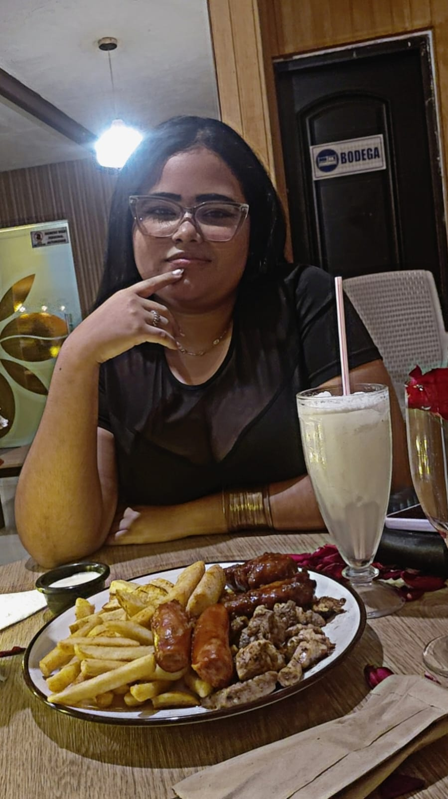
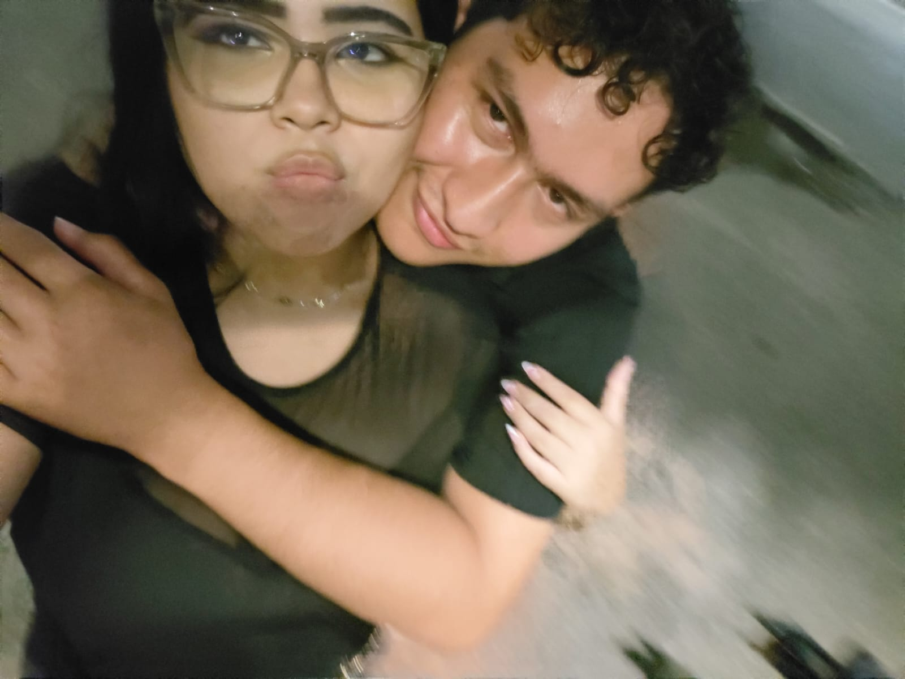
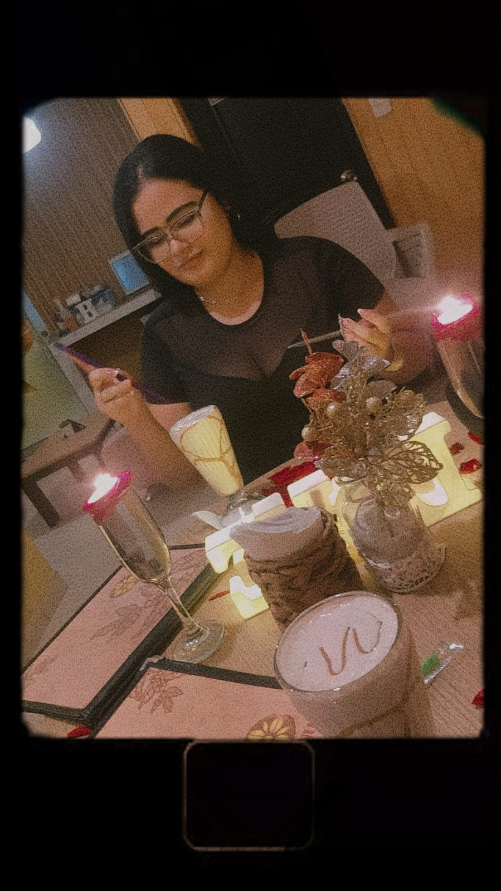

Cada carta tiene una pequeña pregunta. Resuélvela para abrirla y descubrir un mensaje escrito pensando en ti. Tómate tu tiempo: este universo es tuyo. 💌
No encontramos cartas con esa búsqueda. Prueba con otra palabra. 💜
Un pequeño universo hecho para ti
Pequeños pensamientos, grandes sentimientos. Cada carta guarda un pedacito de todo el cariño que despiertas en mí.
Con mucho amor, para alguien muy especial ♡



Secreto desbloqueado ✨
Aquí están las preguntas y respuestas de todas las cartas.
Cada carta tiene una pequeña pregunta. Resuélvela para abrirla y descubrir un mensaje escrito pensando en ti. Tómate tu tiempo: este universo es tuyo. 💌
No encontramos cartas con esa búsqueda. Prueba con otra palabra. 💜